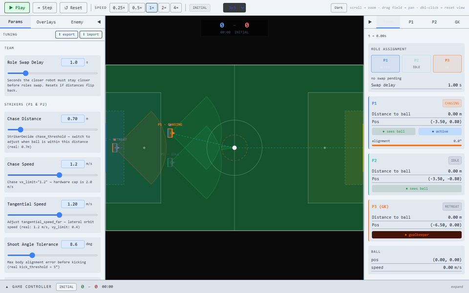
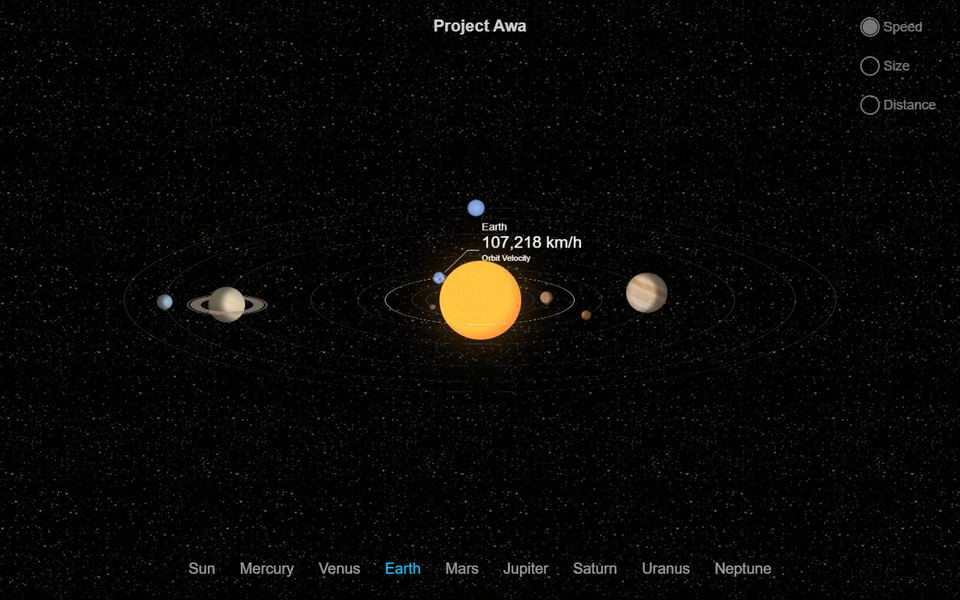
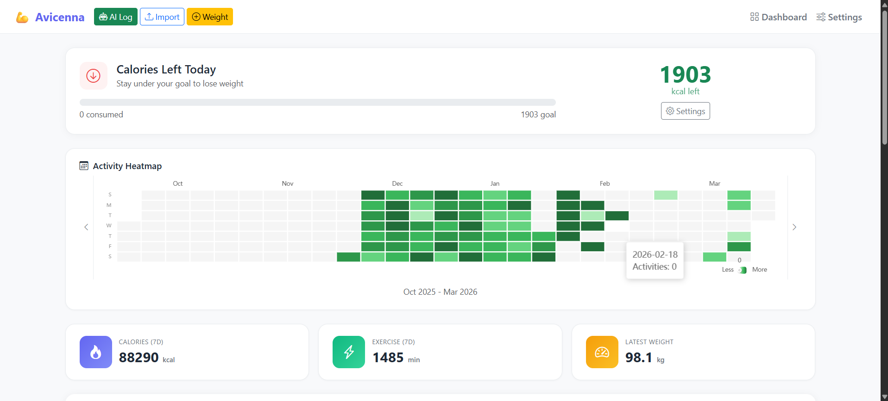
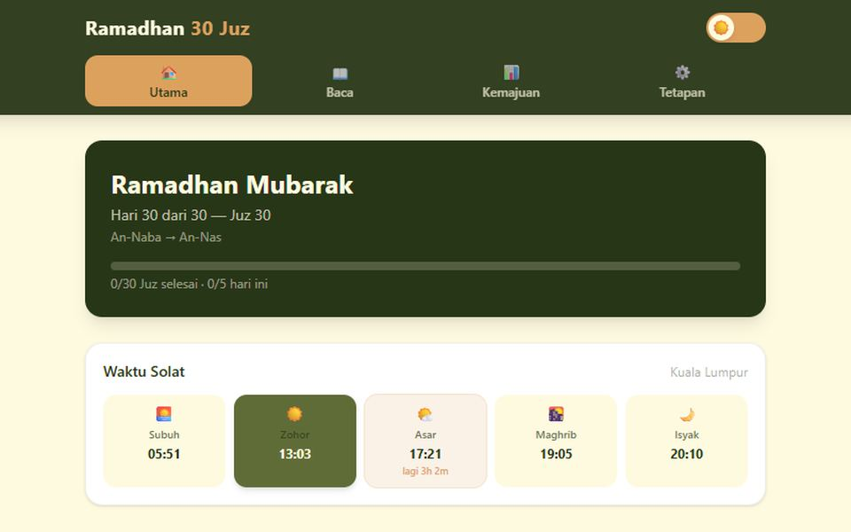

Now
Latest
Master of Computer Science by Research
Back at University of Malaya for a Master of Computer Science by Research, expected to finish in 2028.
Portfolio
Developer · Postgrad student, UM
Passionate about Artificial Intelligence, Machine Learning and Computer Vision. Building robots' brains, vision systems and full-stack products.
“I try to understand how things work, then try them in a different context to see if they can work there too. I just love making things.”
Muhammad Tareq Adam bin Ellias
I'm a Computer Science (Artificial Intelligence) graduate from University of Malaya, now pursuing a Master of Computer Science by Research there. I like taking ideas from AI, computer vision and robotics and turning them into things that just run.
I also work as a full-stack developer in Intekma's Digital Technology Solutions team, digitising the company's workflows with web apps, LLMs and MCP.
I've competed at RoboCup with Team RobotEdge, from the national stage in Malaysia to Abu Dhabi and Beijing, working on the brains behind service robots and humanoid soccer players.
Away from the screen, I've been through military training with PALAPES (ROTU UM), and I love playing guitar.
CGPA
Projects
RoboCup events
Graduate
Back at University of Malaya for a Master of Computer Science by Research, expected to finish in 2028.
Went to Beijing with Team RobotEdge to represent Malaysia against top robotics teams from around the world, finishing third in the international ranking.
Flew to Abu Dhabi with Team RobotEdge to play autonomous humanoid robot soccer against top international teams, taking third place in the Humanoid Soccer category.
Wrote the task logic for the Jupiter service robot with the RobotEdge UM team, bringing together SLAM and mapping, YOLO object detection, speech recognition and speech synthesis, plus pick and place with the Jupiter arm I developed for my final year project. Took first place in the @Home category.
May 2025 – Present
Intekma Sdn. Bhd. · Digital Technology Solutions
Full-time · Kota Damansara, Selangor · On-site
Part of the Digital Technology Solutions (DTS) team, digitising the company's workflows: turning manual processes into web apps, and bringing in LLMs and MCP tools to automate the rest.
Jan 2025 – May 2025
University of Malaya · Part-time
WP. Kuala Lumpur · On-site
Helped members find their way around the makerspace tools, and taught the basics of 3D printing, laser engraving, electronics and coding.
Jun 2023 – Dec 2023
Intekma Sdn. Bhd. · Internship
Kota Damansara, Selangor · On-site
Gained hands-on experience in web development and data analysis during a 7-month internship program.
Think of me as a turbofan: ideas go in the front, every part of the engine is a skill they pass through, and shipped projects come out the back. Hover a part to see what it stands for.
Projects
A simple top-view 2D RoboCup simulator built with TypeScript and deployed on Vercel. Tune the parameters and simulate the robots' logic to understand how a Booster T1 thinks and moves in a standard RoboCup humanoid soccer game.

AWA stands for Astronomy Watchtower and Analysis: an interactive solar system explorer for astronomy education and analysis.

Smart Malay script converter with dictionary-based lookup and phonetic fallback capabilities.
Django-based fitness tracker with AI-powered calorie detection. Tracks dietary intake, exercise, and weight management with a smart dashboard.

Web app to help users complete the Quran during Ramadan 2026. Track daily progress through all 30 juz with a clean, focused interface.

I'm always open to discussing new opportunities, collaborations, or just having a chat about AI and technology.
Design inspired by Son Daven